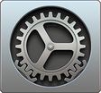
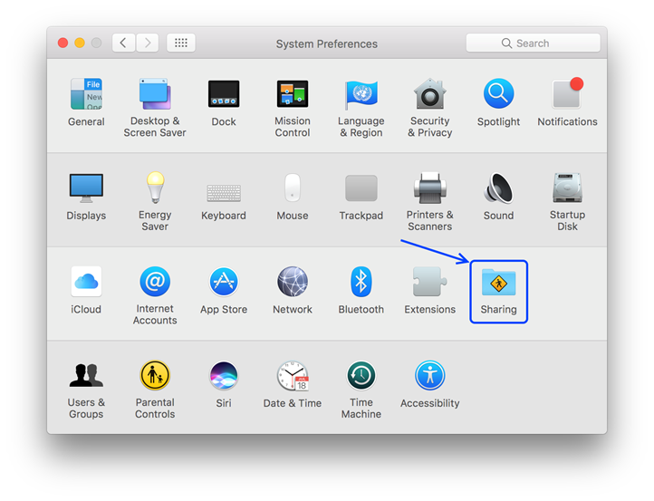
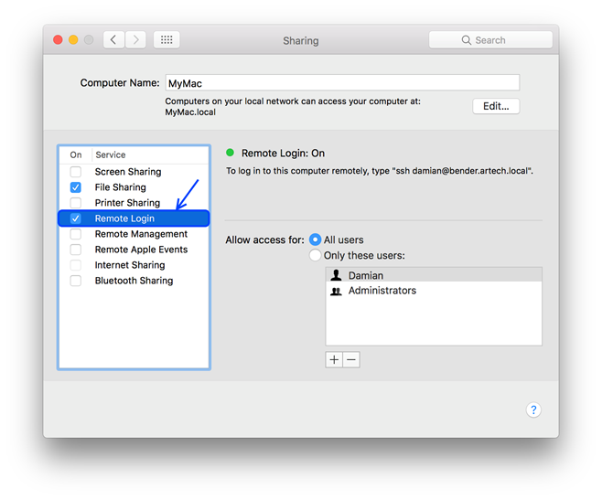
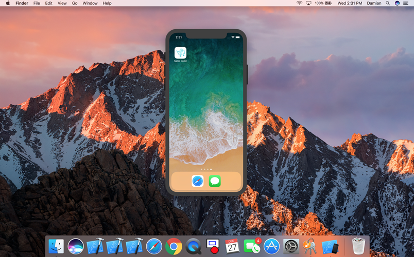

HowTo: Prototyping My iOS Application on My Mac
To prototype your iPhone or iPad application on your Mac, you must follow these steps. Install requirementsCheck Mac requirements on Apple Requirements Enable sshGo to System preferences.  Then, go to the Sharing option.  Check Remote Login.  You'll need to allow access to the user you will use to connect from your Windows computer. Change the default shell to bashThe latest versions of macOS use zsh as the default shell, but it is not supported by GeneXus. You must change it to bash. To do that, open Terminal.app and execute the following command: chsh -s /bin/bash The next time you open Terminal.app it will be using bash, and also it will be used when you connect via SSH (as GeneXus does). Set GeneXus propertiesSet Mac Host, Mac User and Mac Password properties on GeneXus.
Values
Run the applicationYou can use the Mac computer for prototyping the application with all the benefits provided by Apple.  Notes
Videos
|